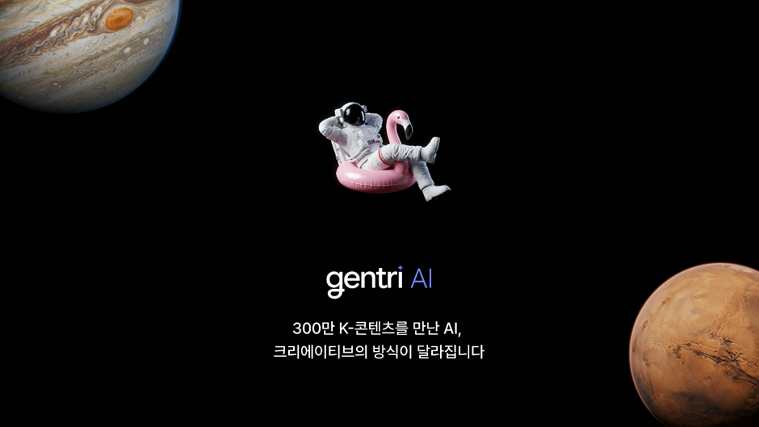
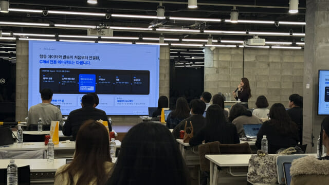
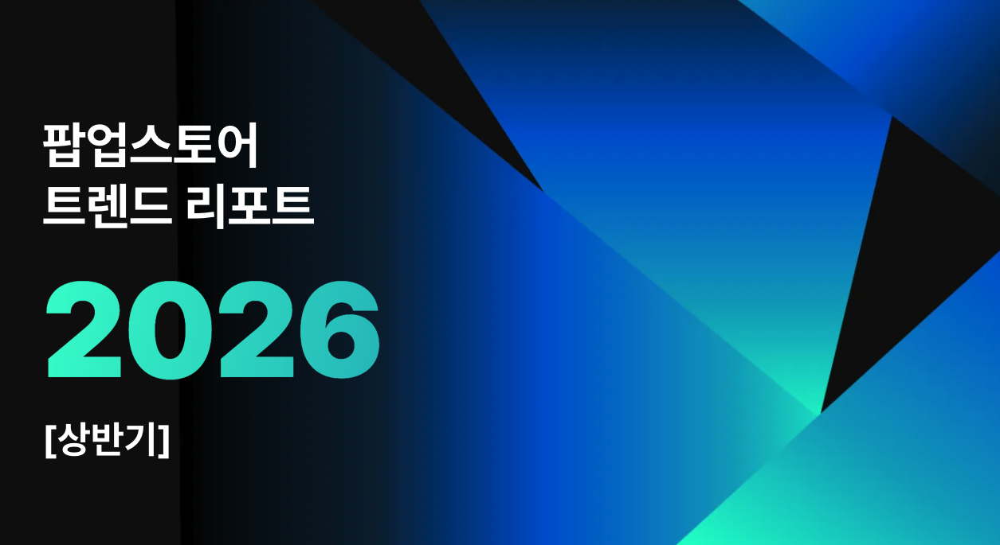

01 · KR
통로이미지 ‘젠트리’
K-콘텐츠 데이터로 상업용 AI 비주얼을 현지화
DIGITAL iNSIGHT는 통로이미지가 국내 정서와 트렌드에 맞춘 생성형 AI 마케팅 에셋 플랫폼 ‘젠트리’ 베타를 공개했다고 보도했다. 콘텐츠 탐색을 넘어 결과물 제작을 지원하는 방향이다.
원문 보기 ↗ADDIT INSIGHT
생성 AI의 차별화는 모델 이름보다 데이터의 지역성·권리 구조·사용 맥락에서 만들어진다.
젠트리·네이버 쇼핑 AI 에이전트·블럭스 CRM·Vivun 세일즈 코파일럿·팝업스토어 사례로, 신뢰와 전환과 경험을 하나의 운영 흐름으로 묶는 법을 살펴봅니다.
오늘은 AI를 더 많이 만드는 법보다, AI가 만든 결과가 실제 고객 행동과 매출과 경험으로 이어지는 구조를 점검합니다.
젠트리, K-콘텐츠 데이터와 상업용 생성 에셋을 결합
네이버 쇼핑 AI 에이전트, 검색을 대화형 구매 여정으로 확장
AI가 AI를 인용하는 오류, GEO 정본 데이터 관리의 필요성 부각
블럭스·Vivun, 분석을 넘어 발송·코칭·CRM 실행까지 자동화
팝업과 세대별 타깃 설계가 AI 시대 브랜드 경험을 구체화

K-콘텐츠 데이터로 상업용 AI 비주얼을 현지화
DIGITAL iNSIGHT는 통로이미지가 국내 정서와 트렌드에 맞춘 생성형 AI 마케팅 에셋 플랫폼 ‘젠트리’ 베타를 공개했다고 보도했다. 콘텐츠 탐색을 넘어 결과물 제작을 지원하는 방향이다.
원문 보기 ↗생성 AI의 차별화는 모델 이름보다 데이터의 지역성·권리 구조·사용 맥락에서 만들어진다.

검색·추천·비교를 대화형 구매 여정으로 연결
네이버 공식 보도자료는 네이버플러스 스토어 앱에 쇼핑 AI 에이전트 베타를 출시했다고 밝혔다. 1.0 버전은 상품 요약·비교·리뷰 분석과 쇼핑 탐색 가이드를 제공한다.
공식 원문 보기 ↗커머스 AI는 상품을 더 많이 보여주는 기술이 아니라 구매 의도를 더 정확히 해석하는 접점이다.

고객 분석부터 발송·증분 매출까지 자동화
ZDNet Korea는 블럭스가 고객 행동과 재구매 주기를 분석해 메시지 대상·시점을 결정하는 AI CRM 전략을 공개했다고 보도했다. 캠페인 성과를 매일 모니터링하고 증분 매출을 산출하는 구조다.
원문 보기 ↗자동화의 성과는 발송량이 아니라 보낼 이유와 추가 매출을 함께 증명하는 데 있다.

판매 공간을 브랜드 세계관과 숏폼 확산의 장으로
OpenAds는 2026년 상반기 2,130개 팝업스토어 데이터를 바탕으로 오프라인 마케팅 트렌드를 분석했다. 체험과 숏폼 바이럴을 연결하는 공간 기획을 제시한다.
원문 보기 ↗오프라인의 역할은 온라인을 대체하는 것이 아니라 온라인에서 공유될 장면을 만드는 것이다.
고객 통화 중 이의 제기와 제품 근거를 실시간 코칭
CIO의 실제 영상 페이지는 Vivun이 통화 중 기술 질문·이의 제기 대응을 돕는 AI sales teammate를 시연했다고 설명한다. 고객 이력·기존 딜·내부 지식을 연결하는 reasoning model과 knowledge graph도 소개됐다.
원문 보기 ↗세일즈 AI는 회의록 요약을 넘어 대화가 진행되는 순간 다음 행동을 제안할 때 코파일럿이 된다.